홈
호텔
지역
리뷰콕콕
AI콕콕
핫플콕콕
AI콕콕 플래너
여행상품 홍보관
여행정보
여행지
여행기사
여행코스
축제
공연/행사
이벤트
가볼래-터
디지털관광주민증
여행지도
홈
호텔
지역
리뷰콕콕
AI콕콕
핫플콕콕
AI콕콕 플래너
여행상품 홍보관
여행정보
여행지
여행기사
여행코스
축제
공연/행사
이벤트
가볼래-터
디지털관광주민증
여행지도
관광지코스
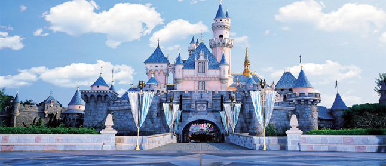
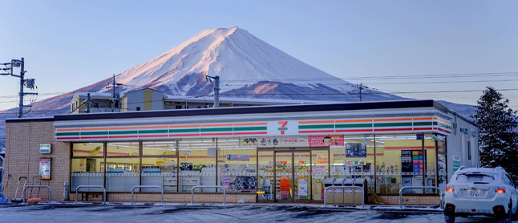
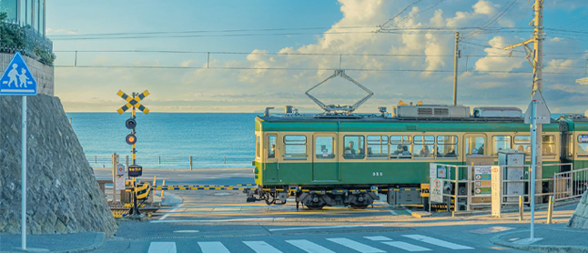
도쿄
도쿄는 현대적인 도시 생활과 전통적인 문화, 엔터테인먼트가 공존하는 매력적인 도시입니다.
5개
228km
20분
3시간
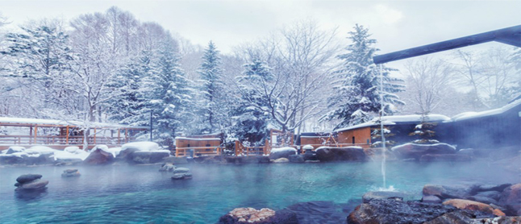
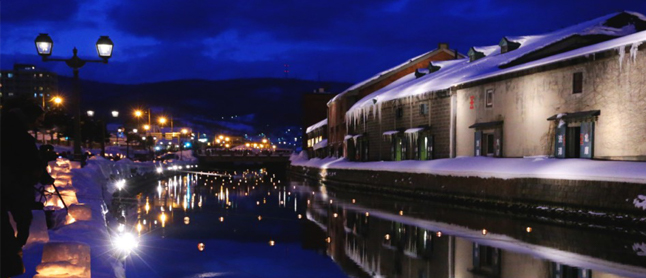
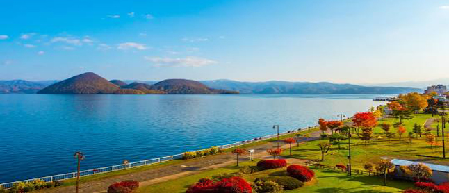
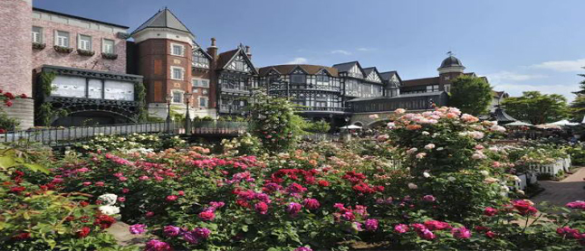
훗카이도
훗카이도는 자연의 아름다움과 특색 있는 관광지로 둘러싸여 있어 많은 여행자들이 찾는 명소입니다.
5개
663km
10분
12시간
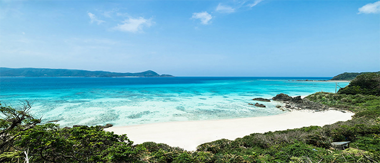
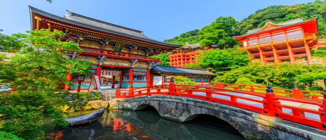
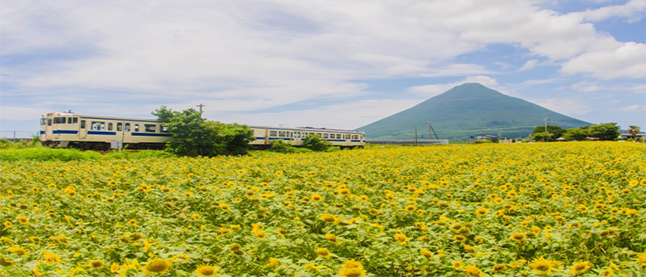
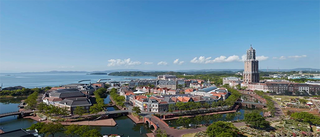
규슈
규슈는 일본의 네 가지 주요 섬 중 하나로, 역사와 문화, 아름다운 자연 풍경 등이 특징적입니다.
5개
1,102km
04분
15시간
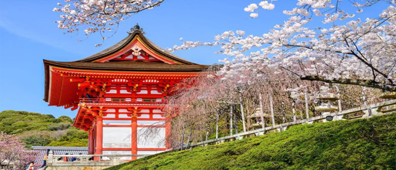
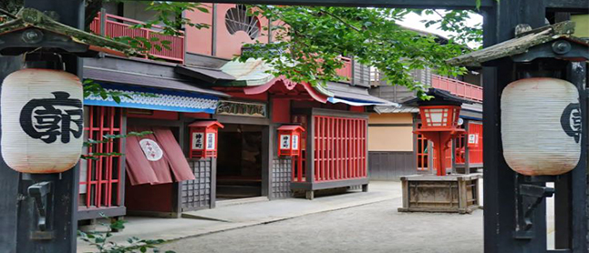
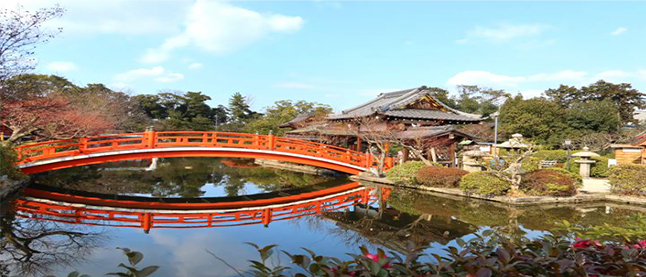
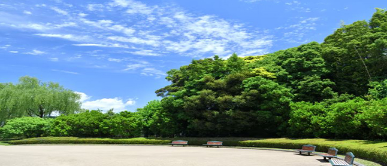
교토
교토는 전통의 매력이 어우러져 있으며, 일본 문화를 체험하고자 하는 여행자에게 인기가 많습니다.
5개
26.3km
40분
1시간
도쿄의 고유한 매력
도쿄는 일본의 수도이자 최대 도시로, 현대적이고 다양한 문화와 역동적인 도시 생활이 특징입니다.
이 도시는 전 세계에서 가장 인구가 많은 도시 중 하나로, 현대 건물과 전통적인 문화가 공존하는 독특한 모습을 보여줍니다.
5개
228km
20분
3시간
함께 가기 좋은 곳
디즈니랜드 / 후지산 / 봉오도리 / 가마쿠라 /시부야스카이
디즈니랜드
위치 : 우라야스시
다양한 디즈니 캐릭터들과 화려한 놀이기구가 있고, 가족 단위 여행에 적합한 곳, 가끔식 혼잡한 인파를 참고하여 계획하세요.
후지산
위치 : 기타야마
후지산은 많은 사람들이 정상까지 등반하여 바라본 풍경을 인상적이라고 언급하고 있습니다. 가이드나 장비를 활용하여 자연의 아름다움을 경험해보세요.
봉오도리 축제
위치 : 혼간지
봉오도리 축제는 독특한 전통복장을 입은 축제 참가자들이 볼거리를 제공합니다. 축제의 활기찬 분위기와 아름다운 거리 풍경을 볼수 있어요.
가마쿠라
위치 : 가나가와현
가마쿠라는 넓은 백사장과 해안선이 아름다운 자연경관을 만들어냅니다. 애니메이션'슬램덩크'의 장면으로 유명해요.
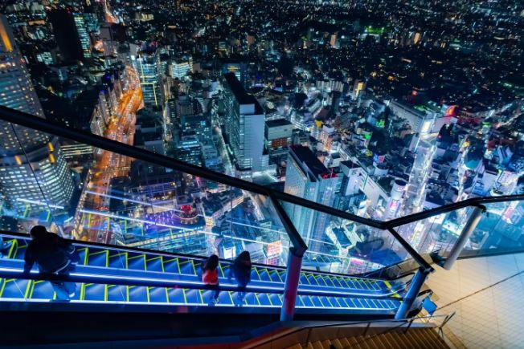
시브야스카이
위치 : 시부야구
시부야스카이는 시부야의 도심을 한눈에 조망할 수 있는 멋진 전망을 즐길 수 있습니다. 일몰이나 야경이 아름답게 펼쳐져, 특별한 경험을 할수 있어요.
월등한 자연경관,훗카이도
훗카이도는 사계절의 아름다움과 다양한 활동으로 가득 찬 도시로, 여행자들에게 특별한 경험을 제공하는 지역 중 하나입니다.
눈을 떠나기 어려운 아름다운 풍경이 특히 인상적이며, 여름에는 신비로운 호수와 강, 가을에는 단풍이 물들어 황홀한 풍경을 만듭니다.
5개
663km
10분
12시간
함께 가기 좋은 곳
노보리베츠 온천 / 오타루 운하 /하코다테 겨울축제 / 도야코호수 /시로이코이비토 파크
노보리베츠 온천
위치 : 노보리베츠시
노보리베츠 온천은'온천의 백화점'이라고 불립니다. 하루에 무려 1만 톤의 온천수가 샘솟아 쾌적한 환경에서 이용할수 있어요.
오타루 운하
위치 : 오타루 에리어
오타루 눈빛거리는 매년 항구 도시 오타루에 불을 밝힙니다. 빛을 내는 조명과 반짝이는 눈 조각상이 어우러진 이축제는 때때로 살을 어는 듯한 추위에 온기를 더해줍니다.
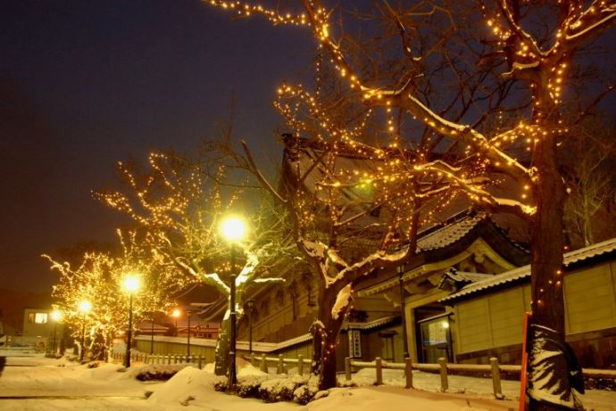
하코다테 겨울축제
위치 / 일시 : 하코다테시 /11월 하순-2월중순
하코다테의 겨울 풍경을 즐길 수 있는 이벤트입니다. 교회와 역사적 건축물이 늘어선 거리의 환하게 불을 밝힌 마슈마루와의 조화를 꼭 감상해 보세요.
도야코호수
위치 : 니세코
인근의 도야산(도야마)에 둘러싸여 있어 자연 경관이 아름답습니다. 호수 주변에는 산책로와 전망대가 마련되어 있어 관광객들이 풍경을 즐기기에 좋은 장소입니다.
시로이코이비토 파크
위치 :미야노사와
홋카이도를 대표하는 특제 화이트 초콜릿을 랭그드샤 사이에 넣어 만들어 높은 인기를 자랑하고 있다. 제조 공장을 견학하며 과자 만들기 체험이나 초콜릿 역사를 배울 수 있어요.
훌륭한 교통 인프라, 규슈
규슈는 일본의 네 가지 주요 섬 중 하나로, 역사와 문화, 아름다운 자연 풍경 등이 특징적입니다.
규슈는 훌륭한 교통 인프라를 자랑합니다. 신칸센이 운행되면서 도시 간 이동이 편리해졌으며,
국제공항과 대형 항구를 통해 국제적인 교역과 교류의 중심지로 기능하고 있습니다.
5개
1,102km
04분
15시간
함께 가기 좋은 곳
규슈가고시마해변 / 이다리신사 / 사즈마 후지 /하우스텐보스 /타카치호 협곡
가고시마해변
위치 :요시노초
바닷물이 빠졌을 때만 나타나는 하트모양의 웅덩이가 있어 사랑의 명소입니다. 스노클링이나 다이빙을 즐기면서 아름다운 바다 속에서 바다거북도 만날 수 있어요.
이다리신사
위치 : 야부노우치 초
여우신사로 더 유명하다. 신을 모시는 곳으로 이곳 여우신사는 주황빛 토리이가 1만여 개가 줄지어 있어 그 웅장함이 포토스팟으로 유명한 길이에요.
가고시마 이부스키
위치 사즈마 후지
일본 백명산에도 선정될 만큼 우수한 산입니다. 기슭에는 카이몬 산록 자연 공원이 펼쳐져 있어서 자연을 몸으로 느끼고 싶은 분에게 특히 추천입니다. 가고시마 이부스키의 자연을 느끼세요
하우스텐보스
위치 : 나가사키현
네덜란드의 거리와 미나토마치를 재현한 테마파크 입니다. 이국 정서 넘치는 네덜란드의 시골 풍경과 여러 가지 빛깔의 꽃을 바라보며 느긋하게 산책해보세요.
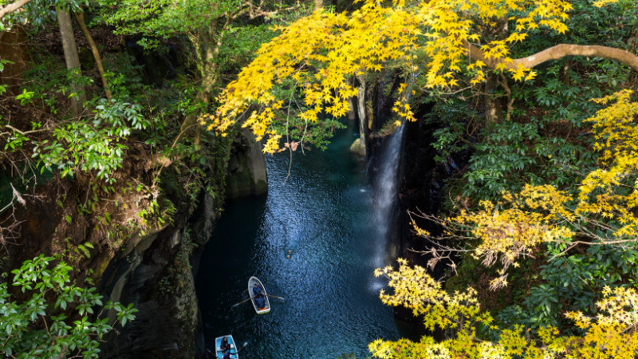
타카치호 협곡
위치 : 무코야마
푸른숲속에서 가까이서 17미터 낙차의 마나이노타키 폭포가 쏟아지는 자연을 볼수있습니다. 특히 다카치호 협곡의 보트가 인기인데,직접 노를 저으며 유람할수 있어요.
전통적 매력, 교토
교토는 일본의 수도였던 역사적인 중심지로 역사와 예술, 그리고 전통의 매력이 어우러져 있는 도시로, 일본 문화를 체험하고자 하는
여행자에게 인기가 많습니다.
5개
26.3km
40분
1시간
함께 가기 좋은 곳
기요미즈 데라 / 에이가무라 / 지다이마츠리 축제/ 신센엔 /교토 식물원
기요미즈 데라
위치 :히가시야마구
기요미즈 데라는 교토의 대표적인 절로, 물 위에 떠 있는 나무 다리로 유명합니다. 봄에는 벚꽃, 가을에는 단풍이 아름다운 절 내외를 장식하며, 전망대에서는 교토의 도시 경관을 감상할 수 있어요.
에이가무라
위치 : 우즈마사
많은 사무라이 영화와 시대극이 바로 이곳에서 촬영되었어요. 오래된 주택, 헛간, 방과 같은 흥미로운 야외 및 실내 세트가 마련되어 있습니다. 이곳에서 진행하는 전통 의상을 입고 사진 촬영을 해보세요
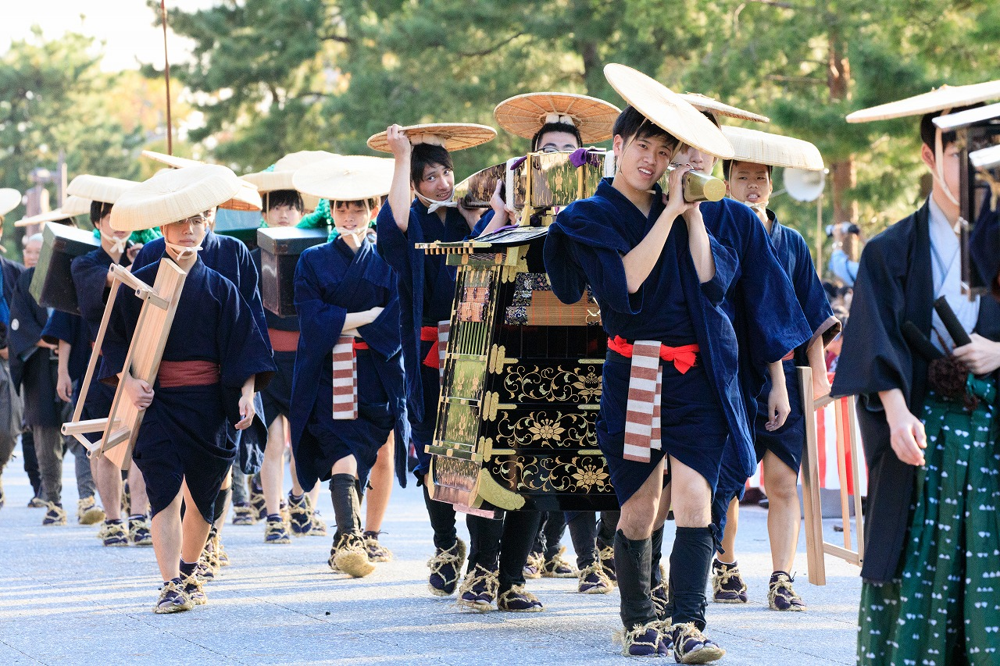
지다이마츠리축제
위치 / 일시 : 헤이안신궁 / 10월 22~24일
일본 교토부에서 열리는 축제입니다. 교토가 수도였던 약 1100년 동안의풍속을 시대별로 나누어 재현하는 가장행렬로, 전통 음악인 기온바야시에 맞추어 교토거리를 순행하는 장면이 인상적이에요.
신센엔
위치 :히가시이루
이 정원은 신선한 봄 정원을 의미하며 궁전과 연결되어 황제의 개인 정원으로 사용되었습니다. 교토에서 가장 오래된 기존 정원으로 계속 알려져 있습니다.
교토 식물원
위치 : 한기초
12만 개 이상의 식물이 있는 이 식물원은 대나무, 벚나무, 수국, 분재, 동백나무, 제비붓꽃과 토종 식물, 연꽃 등을 위한 특별 정원과 티 하나 없이 깔끔한 유럽식 정원으로 구성되어 있어요.
X
축제와 소식
겨울 홋카이도 비에이 방문시 매너사항 안내
2024-02-07
뉴욕타임즈 선정 '2024년 방문해야 할 세계여행지 52 곳 중 3위'
2024-02-23
외국인 관광객을 위한 푸시 정보 알림 앱 "Safety tips"
2024-03-10
JNTO 일본 여행 책자 선착순 배포 신청 안내
2024-04-02
더보기
공지
|
FAQ
|
이벤트